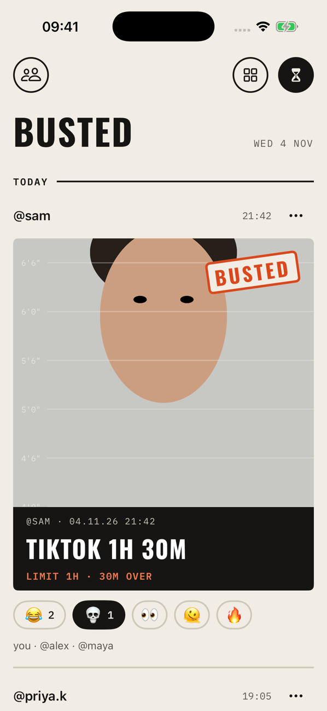
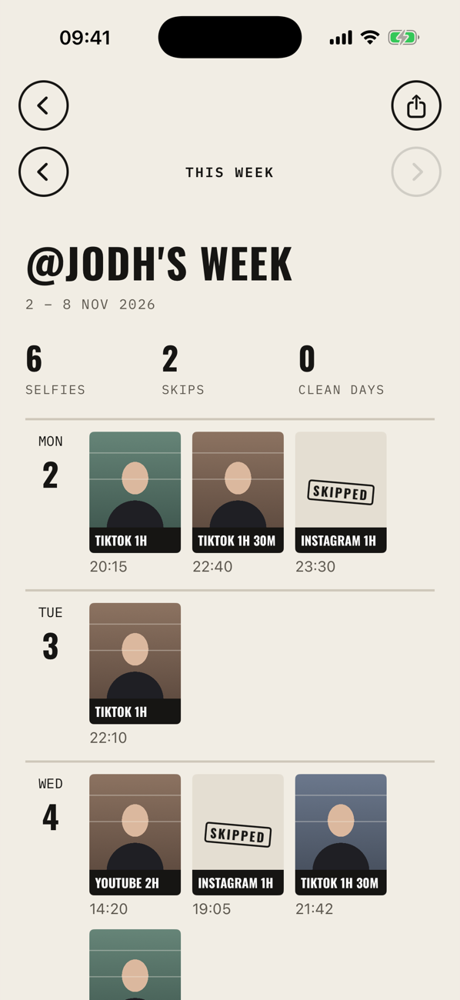

@sam21:42
BUSTED
@SAM · 18.11.26 21:42
TIKTOK 1H 30M
LIMIT 1H · 30M OVER
UNLOCKED FOR 30M
😂 2💀 1👀🫠🔥
A free iPhone app · 18+
Set a daily limit on the apps you overuse. Go past it and the app locks until you take a selfie. Your friends see every one.
How it works
Pick the apps you spend too long on and give each a daily limit. Or set a schedule that locks apps during work hours.
When your time is up, the app locks. To open it again you take a photo and choose how long to unlock it for, from 15 minutes to 2 hours.
The photo posts to your friends as a mugshot, with the app, your time and your limit. Skip the photo and a blank SKIPPED tile posts in its place.
What's inside
Most screen-time limits are one tap to ignore, and nobody knows you did. Busted makes that tap cost a selfie.
Today's and yesterday's posts, in time order. No algorithm and no endless scroll.
Friends answer your mugshot with 😂 💀 👀 🫠 or 🔥. No comments.
A weekly leaderboard of who got busted most. First place is Public Enemy No. 1.
Every Monday, a collage of your week's mugshots and skips to save or share.
Lock apps, whole categories or websites at set times, like 09:00–17:00 on weekdays.
A 5-second pause before the camera opens, in case you'd sooner put the phone down.


Get the app
Busted is in beta, so it installs through TestFlight, Apple's app for trying apps before they reach the App Store. It needs an iPhone on iOS 26.2 or later.
Questions
Only friends you've accepted. You add each other by exact username and both have to agree. There are no public profiles and no follower counts.
No. There's no background camera and no screen recording. You take every photo yourself, and you see it before it posts.
Friends see a post on the day it's made and the day after. After that only you can see it. You can delete any of your posts at any time, and deleting your account removes all your photos. The privacy policy has the detail.
Tap Skip on the lock screen. The app unlocks for a short time and a blank SKIPPED tile posts to your friends, so they still know.
Nothing. There are no payments, subscriptions or ads.
An iPhone on iOS 26.2 or later. You must be 18 or over. Busted uses Apple's Screen Time to lock apps, so it asks for Screen Time access when you set it up.
Not at the moment. Busted is iPhone only.